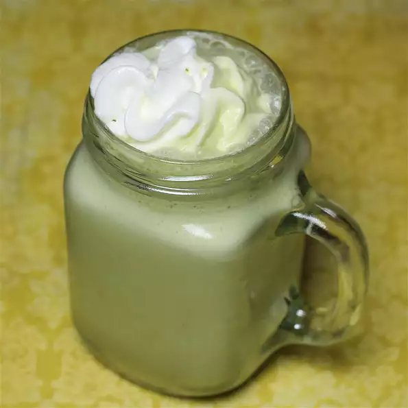

Matcha Frappe

Since im from Texas this beverage is great to cool off with in the summer.
Ingredients
- 1 cup milk
- 1 teaspoon matcha green tea powder, or more to taste
- 5 ice cubes, or as needed
- 1 tablespoon vanilla-flavored syrup (such as Torani®)
- 1 tablespoon whipped cream, or to taste
Directions
- Combine milk, matcha green tea powder, ice, and vanilla syrup, respectively in a blender; blend to desired consistency. Serve with whipped cream on top.
Return to homepage!